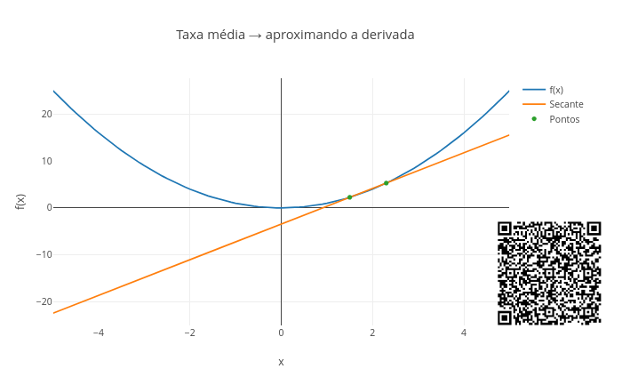
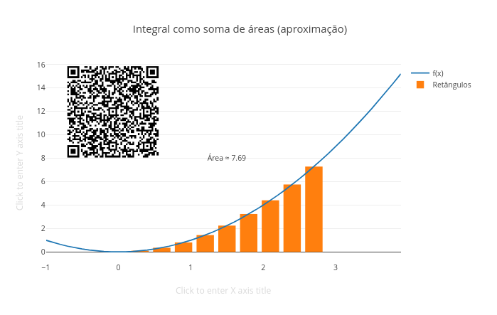
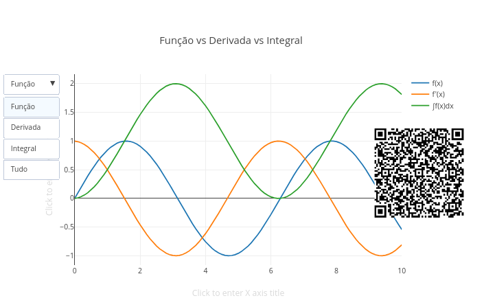
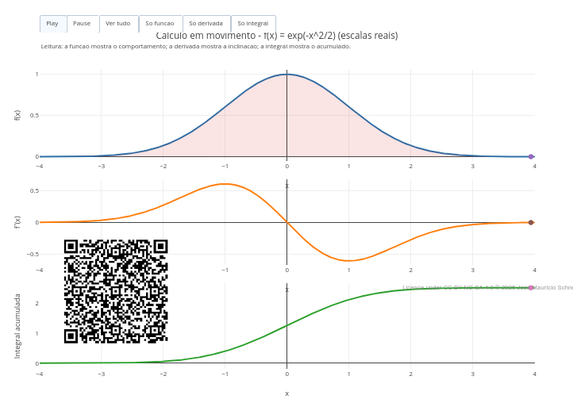
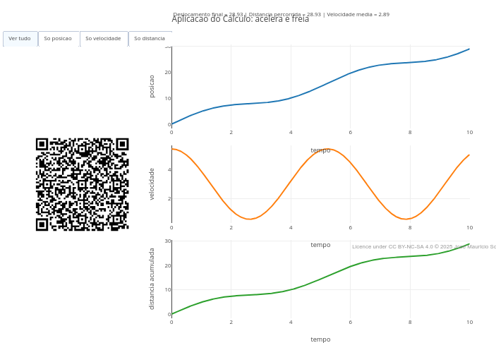

8 Cálculo Diferencial e Integral
Você já notou que quase tudo que é importante muda com o tempo ? A velocidade aumenta ou diminui, a temperatura sobe e desce, a população cresce, o dinheiro rende (ou some), a energia se transforma. Sem contar aquele tempo que passa rápido quando você está jogando, mas se arrasta quando a semana é de provas.
Independentemente da situação, é desejável medir essas mudanças em tempo real, “capturar” um instantâneo dessas mudanças, ou ainda somar infinitas partes desses instantâneos para obter o todo.
Neste capítulo você verá que essas coisas estão ligadas a taxas de variação (derivadas) que se convertem em quantidades acumuladas (integrais), ou vice-versa. Possuem em comum uma base conceitual clara (limites) e podem ser aplicadas tanto a funções matemáticas que descrevem comportamentos quanto a dados coletados no mundo. Assim nasce o Cálculo !

Depois de explorar, você consegue:
- interpretar derivadas como taxas de variação instantânea em fenômenos matemáticos, físicos, químicos, biológicos e econômicos;
- compreender integrais como processos de acumulação, soma contínua e área sob uma curva;
- relacionar função, derivada e integral como três formas complementares de descrever o mesmo fenômeno;
- usar visualizações interativas para explorar limites, aproximações, inclinações e áreas;
- reconhecer cuidados importantes na modelagem, como domínio da função, escala do gráfico e interpretação das unidades;
- conectar cálculo diferencial e integral a situações reais envolvendo movimento, energia, crescimento, consumo e dados experimentais.
- simular situações do Cálculo por meio de aplicações interativas computacionais.Antes de qualquer definição formal, experimente o JSPlotly abaixo sobre taxas de variação.
Derivada

Agite antes de usar
O JSPlotly que inicia esse capítulo mostra como medir mudança em um ponto. O gráfico apresenta uma função f(x), com dois pontos próximos e uma reta que corta a função (secante) ligando esses pontos (taxa média). Observando o gráfico, você pode notar que quando os pontos se aproximam (h $\rightarrow$ 0), a taxa média vira taxa instantânea e a secante transforma-se na derivada, ou a inclinação da curva nesse ponto.
Inicialmente, execute o script com:
const funcao = (x) => x*x;
const x0 = 1.5;
const h = 0.8;Agora reduza o valor de h e observe o que acontece com a reta secante.
const h = 0.4;
const h = 0.1;
const h = 0.01;Depois, troque a função e compare os comportamentos. Você pode utilizar algumas, como as que foram apresentadas na seção sobre JavaScript do capítulo anterior, como “x**3” (o mesmo que x\(^3\)), “Math.sqrt(x)” (o mesmo que \(\sqrt{x}\)), ou a função que segue, por exemplo.
const funcao = (x) => Math.sin(x);Perceba que medir uma velocidade é achar a mudança exatamente em um ponto. A taxa média mede a variação entre dois pontos, ou seja, “quanto mudou dividido pelo intervalo”. Mas a taxa de mudança em um único ponto é medida quando esses pontos estão tão próximos que você não percebe mais a distância entre eles, parecendo que são um só. É esse processo que leva à derivada. Siga o modo de usar abaixo para o app.
- Rode o script;
- Observe a curva f(x);
- Veja os dois pontos marcados;
- Observe a reta secante;
- Diminua
h; - Veja os pontos se aproximando;
- Observe a reta mudando de inclinação;
- Continue diminuindo
h; - Perceba que a reta “encosta” na curva;
- Esse é o comportamento da tangente.
Veja que a tangente ou derivada nada mais são do que a inclinação de uma reta quando os dois pontos se tornam praticamente o mesmo. A ideia do app é mostrar de forma intuitiva e geométrica uma primeira noção do Cálculo, a de que uma taxa de variação ocorre quando uma secante (uma taxa média) vira uma tangente (uma taxa instantânea).
Que tal explorar alguns cenários agora ?
- Distância grande. A reta representa bem a inclinação local ?
const h = 1.5;Pergunta:
- Aproximação. A reta começa a representar melhor a curva ?
const h = 0.3;- Quase no ponto. A reta parece tocar a curva em apenas um ponto ?
const h = 0.01;- Função diferente. A ideia funciona para qualquer função ?
const funcao = (x) => Math.tan(x);- Mudando o ponto. A inclinação depende do ponto escolhido ?
const x0 = -2;Portanto, observe que quando h $$ 0, a secante vira tangente. Sua representação clássica como derivada é dada abaixo:
\[ f'(x) = \lim_{h \to 0} \frac{f(x+h) - f(x)}{h} \text{; derivada} \tag{8.1}\]
Por dentro do script
O script começa definindo a função:
const funcao = (x) => x*x;Depois escolhe um ponto:
const x0 = 1.5;E uma pequena variação:
const h = 0.8;Os dois pontos são:
xA = x0
xB = x0 + hA inclinação da secante é calculada como uma taxa média:
m = (yB - yA) / (xB - xA)Depois o script desenha a reta secante. Quando h diminui, essa reta começa a “encostar” na curva, fazendo surgir a derivada nesse limite.
Os conceitos do JSPlotly da Figura 8.2 acima aparecem em muitos contextos. Sempre que algo muda, é possível se determinar quão rápido está mudando num tempo específico.
Integral
O outro “lado da moeda” no Cálculo é a integral, a soma das pequenas partes. Enquanto a derivada mede a mudança, a integral acumula essa mudança. O app que segue busca apresentar um pouco essa ideia, também de forma geométrica.

O aplicativo mostra como calcular a área sob uma curva usando retângulos, um procedimento chamado Soma de Riemann. O gráfico mostra a função f(x) e vários retângulos dispostos ao longo do intervalo de x. A soma total das áreas desses retângulos aproxima o valor da integral da função. Quanto menor o intervalo, maior o número de retângulos e, quanto maior esse número, mais próxima estará a soma das áreas do valor da integral de f(x).
Execute o script com:
const funcao = (x) => x*x;
const a = 0;
const b = 3;
const n = 10;Agora aumente o número de retângulos para 20, 50, e 100, e observe como a aproximação melhora.
Depois teste outras funções, como feito para a Figura 8.2, e compare os resultados. Segue um exemplo:
const funcao = (x) => Math.sin(x);Para retângulos simples, sabemos calcular a área (vide capítulo sobre Geometria). Mas, e para curvas ? A solução é dividir a região em partes pequenas, cada pedaço sendo aproximado por um retângulo. Somando todas as áreas temos a integral. Observe que a integral se aproxima da área de uma região com uma borda curva quanto menor for a distância entre os intervalos dessa curva. Ou seja, quanto menor o intervalo, mais precisa fica a aproximação. Segue um modo de usar para o app.
- Rode o script;
- Observe a curva f(x);
- Veja os retângulos;
- Observe o valor da área;
- Aumente
n; - Veja os retângulos ficarem mais finos;
- Compare a área calculada;
- Continue aumentando
n; - Observe a aproximação melhorar;
- Teste outra função.
O aplicativo mostra então o que acontece com a soma quando os retângulos ficam cada vez menores. Alguns contextos para você explorar um pouco mais:
- Poucos retângulos. A aproximação é boa ou grosseira ?
const n = 5;Mais subdivisões. Mude agora o valor
npara 30 retângulos. A área parece mais próxima da curva ?Muitas subdivisões. Agora vá para 100 retângulos. A soma parece estabilizar em um valor ?
Intervalo diferente. A área depende do intervalo escolhido ?
const a = 1;
const b = 4;- Outra função. O método funciona para qualquer função ?
const funcao = (x) => Math.sin(x);A curva representa a função e os retângulos as aproximações locais da área. A soma dessas áreas é a integral. Quanto menor o dx, melhor a aproximação. Traduzindo para o bom português, a integral representa a soma de infinitas partes pequenas. Ou, no formalismo clássico:
\[ \int_a^b f(x)\,dx \text{; integral} \tag{8.2}\]
Nessa Equação 8.2, o símbolo \(\int\) representa a integral entre os limites a e b.
Por dentro do script
O script começa definindo a função:
const funcao = (x) => x*x;E o intervalo:
const a = 0;
const b = 3;Depois define o número de subdivisões:
const n = 10;A largura de cada retângulo é:
dx = (b - a) / n;Para cada retângulo:
let xi = a + i*dx;
let yi = funcao(xi);A área é aproximada por:
soma += yi * dx;Assim, o script constrói a integral como uma soma.
Depois de experimentar os JSPlotly das Figura 8.2 (derivação) e Figura 8.3 (integração), você deve ter percebido que se tratam de operações inversas, uma levando à outra, e com a função f(x) no meio. Essa é a base do chamado Teorema Fundamental do Cálculo. Dessa forma, função, derivada e integral “são farinhas do mesmo saco”, três formas de se observar uma mesma mudança. Que tal avançar então um bocadinho nessa integração ?

Depois de explorar a derivada como taxa de variação e a integral como soma acumulada, o app da Figura 8.4 coloca as duas ideias lado a lado. Agora, a mesma função pode ser observada de três jeitos diferentes: seu valor, sua mudança e seu acúmulo.
Agite antes de usar
O script compara três curvas: a função original f(x), sua derivada aproximada f'(x), e sua integral acumulada ∫f(x)dx. A ideia é que uma função pode ser estudada pelo que ela vale (a função, propriamente dita), por como ela muda (derivada) e pelo que ela acumula (integral). Execute o script com:
const f = (x) => Math.sin(x);Use os botões Função, Derivada, Integral, ou Tudo. Depois, teste outras funções:
const f = (x) => x*x;
const f = (x) => Math.cos(x);
const f = (x) => Math.exp(0.2*x);Observe como a derivada e a integral mudam junto com a função original, mostrando que há uma relação entre uma função, sua taxa de mudança e seu acúmulo. A derivada mostra como a função está mudando em cada ponto, enquanto que a integral mostra quanto a função acumulou desde o início do intervalo. Resumindo, enquanto a função mostra o estado atual, a derivada mostra a velocidade da mudança e a integral o histórico acumulado. Segue um modo de usar o app:
- Rode o script;
- Clique em
Função; - Observe apenas a curva original;
- Clique em
Derivada; - Compare onde a função sobe e onde a derivada é positiva;
- Clique em
Integral; - Observe como o acúmulo cresce ou diminui;
- Clique em
Tudo; - Compare as três curvas juntas;
- Troque a função original;
- Repita a comparação.
Aqui tem uma desfecho bem bacana, que é quando você percebe que a derivada e a integral revelam o que a função sozinha não mostra. Vamos para alguns cenários ?
- Função seno. Por que a derivada parece deslocada em relação à função original ?
const f = (x) => Math.sin(x);- Função quadrática. Por que a derivada cresce de forma mais simples que a função ?
const f = (x) => x*x;- Função cosseno. Como a derivada muda quando a curva começa no valor máximo ?
const f = (x) => Math.cos(x);- Crescimento exponencial. Por que crescimento exponencial também produz derivada crescente ?
const f = (x) => Math.exp(0.2*x);- Tudo ao mesmo tempo. Use o botão
Tudo. As três curvas contam a mesma história ou histórias diferentes sobre a mudança ?
A função mostra o comportamento original, a derivada mostra a inclinação local, e a integral mostra o acúmulo ao longo do caminho. Quando a função está positiva, a integral tende a crescer. Quando a função está negativa, a integral pode diminuir. Quando a função sobe rapidamente, a derivada fica maior. Quando a função atinge máximos ou mínimos, a derivada se aproxima de zero. Por conseguinte, o cálculo permite olhar para o mesmo fenômeno de formas diferentes: estado, mudança e acúmulo.
Por dentro do script
O script começa definindo a função:
const f = (x) => Math.sin(x);Depois percorre o intervalo de 0 a 10:
for (let i = 0; i <= 10; i += dx)Em cada ponto, calcula o valor da função:
let yi = f(i);A derivada é aproximada por uma diferença pequena:
let d = (f(i+dx) - f(i)) / dx;Essa expressão mede quanto a função mudou em um intervalo pequeno. A integral acumulada é construída somando pequenas áreas:
soma += yi * dx;Assim, o script combina os dois processos centrais do cálculo, aproximando as inclinações e acumulando as áreas.
Função, derivada e integral, ainda que sejam interligados, tem lá seu grau de abstração para a compreensão dos conceitos envolvidos (e dá-lhe abstração nisso). Nessa linha, o JSPlotly que segue busca diminuir esse desconforto, apresentando uma animação que junta os três objetos de estudo num movimento simultâneo, e permitindo que o cálculo ganhe vida.

O script mostra o cálculo como um processo dinâmico, onde é possível observar simultaneamente a função f(x), sua derivada f'(x), sua integral acumulada, uma partícula se movendo ao longo do eixo x, e a área sendo construída em tempo real.
Agite antes de usar
No gráfico, o topo representa a função (estado atual), o meio representa a derivada (inclinção) e a base representa a integral (acúmulo). E a área preenchida mostra a integral sendo construída.
Execute o script e clique em Play. Observe o ponto se movendo na função, a inclinação mudando na derivada e a área crescendo na integral. Agora altere para uma das funções matemáticas abaixo:
const tipoFuncao = "sin";
const tipoFuncao = "poly";
const tipoFuncao = "exp";
const tipoFuncao = "gauss";E teste:
const normalizar = true;Compare os comportamentos e observe como a função, sua taxa de mudança e seu acúmulo evoluem juntos. À medida que o ponto avança, a função mostra “onde estamos”, a derivada mostra “como estamos mudando” e a integral mostra “quanto já acumulamos”. Isso sugere que derivar e integrar são duas formas complementares de descrever o mesmo processo. Segue um tutorial de uso para o script:
- Rode o script;
- Clique em
Play; - Observe o ponto se movendo na função;
- Veja a derivada mudando ao longo do caminho;
- Observe a área sendo construída;
- Pause a animação;
- Analise um ponto específico;
- Troque a função;
- Compare comportamentos;
- Ative/desative
normalizar; - Use os botões “Só função”, “Só derivada”, “Só integral”, ou “Ver tudo”.
E agora alguns cenários “derivados” e “integrados” à cena.
- Oscilação (seno). Por que a integral sobe e desce ao longo do tempo ?
const tipoFuncao = "sin";- Crescimento contínuo. Por que derivada e função crescem juntas ?
const tipoFuncao = "exp";- Pico central (gaussiana). Essa curva é característica da
distribuição normalobservada na distribuição estatística dos fenômenos naturais. Por que a derivada muda de sinal no centro ?
const tipoFuncao = "gauss";- Polinômio. Como a forma da curva afeta a derivada ?
const tipoFuncao = "poly";- Normalização. Por que comparar formas pode ser mais útil que comparar valores absolutos ?
const normalizar = true;- Velocidade da animação. O que você percebe melhor quando a animação desacelera ?
const passoFrame = 2;Veja que o ponto que se move conecta tudo, a posição, a inclinação, e o acúmulo (histórico).
Por dentro do script
O script começa escolhendo o tipo de função:
const tipoFuncao = "gauss";Depois constrói o domínio:
const dx = (xmax - xmin) / (N - 1);A função é definida dinamicamente:
function f(x)A derivada é aproximada numericamente:
(f(x2) - f(x1)) / (x2 - x1)A integral acumulada é construída por soma trapezoidal:
soma += ((yAnterior + yi) / 2) * dx;A animação acontece aqui:
frames.push({Por fim, cada frame move o ponto e atualiza a posição na função, o valor da derivada e a área acumulada.
Agora é hora se entreter com pequenas loucuras. Mas antes, que tal um último JSPlotly ? Só pra mostrar como a derivada e a integral agem como ferramentas para explicar o mundo real.

Esse último JSPlotly da Figura 8.6 mostra o cálculo aplicado para descrever movimento, velocidade e distância.
Agite antes de usar
O script mostra três grandezas fundamentais: posição s(t), velocidade v(t), e distância acumulada. A ideia é que a derivada mede como a posição muda, enquanto que a integral mede quanto se percorreu. Observe como os gráficos mudam juntos e verifique como posição, velocidade e distância estão conectadas.
Execute o script com:
const tipoMovimento = "acelera_freia";
const intensidade = 1.0;
const tempoFinal = 10;Agora explore outros movimentos, como:
const tipoMovimento = "uniforme";
const tipoMovimento = "acelerado";
const tipoMovimento = "oscilatorio";E altere:
const intensidade = 2.0;
const tempoFinal = 15;A posição mostra “onde está”, enquanto que a velocidade mostra “como está se movendo”, e a distância o “quanto já percorreu”. Matematicamente falando, a velocidade é a derivada da posição e a distância é a integral da velocidade (em módulo). Segue um tutorial rápido para uso do app.
- Rode o script;
- Observe o gráfico de posição;
- Veja como ele evolui no tempo;
- Ative “Só velocidade”;
- Compare com a inclinação da posição;
- Ative “Só distância”;
- Veja o acúmulo ao longo do tempo;
- Clique em “Ver tudo”;
- Observe os três juntos;
- Troque o tipo de movimento;
- Compare os comportamentos;
- Aumente a intensidade.
Com algumas experiências acima, você deve verificar que a velocidade explica a forma da posição e da distância. Vão alguns cenários bem “movimentados” agora.
- Movimento uniforme. Por que a velocidade é constante ?
const tipoMovimento = "uniforme";- Movimento acelerado. Por que a velocidade cresce ao longo do tempo ?
const tipoMovimento = "acelerado";- Movimento oscilatório. Por que a velocidade muda de sinal ?
const tipoMovimento = "oscilatorio";- Acelera e freia. Como a combinação de movimentos altera o comportamento ?
const tipoMovimento = "acelera_freia";- Intensidade maior. O movimento muda só de escala ou de comportamento ?
const intensidade = 2.5;Matematicamente, a velocidade pode ser formulada como na Equação 8.3, e a posição, como na Equação 8.4 abaixo:
\[ v(t) = \frac{ds}{dt} \tag{8.3}\]
e
\[ d(t) = \int_0^t |v(\tau)|\,d\tau \tag{8.4}\]
Por dentro do script
O script começa definindo a posição:
function s(t)Cada tipo de movimento cria um comportamento diferente. Depois calcula a velocidade numericamente:
v = (pos[i + 1] - pos[i - 1]) / (2 * dt);Isso aproxima a derivada. A distância é calculada acumulando a velocidade:
distanciaAcumulada += ((|v1| + |v2|)/2) * dt;Isso corresponde à integral da velocidade em módulo. No final, o script calcula o deslocamento total, a distância percorrida e a velocidade média, tudo aparecendo como anotação no gráfico.
Bom ! A gente só não pode se esquecer de que essa é aquela seção cujo título remonta a “como divagar sem culpa”. Então, segue uma “penca” dessas divagações !!
- E se a velocidade de um carro não fosse mostrada no painel, mas você tivesse que deduzi-la apenas observando como a posição muda com o tempo ?
- E se um motorista acelerasse suavemente — como isso apareceria na derivada do movimento ?
- E se dois trajetos diferentes levassem ao mesmo destino, mas com velocidades completamente distintas ao longo do caminho ?
- E se a distância percorrida fosse muito maior que o deslocamento final — o que isso diria sobre o percurso ?
- E se o gráfico da posição fosse conhecido, mas a velocidade fosse um mistério — você conseguiria reconstruí-la ?
- E se a área sob o gráfico de velocidade fosse a única informação disponível — você conseguiria descobrir o caminho percorrido ?
- E se o movimento fosse irregular, com acelerações e frenagens constantes — o cálculo ainda daria conta ?
- E se o tempo fosse observado em câmera lenta — você perceberia melhor a relação entre função, derivada e integral ?
- E se cada instante do movimento fosse uma fotografia — como reconstruir o filme completo ?
- E se o cálculo fosse, na verdade, uma linguagem para descrever mudanças contínuas ?
- E se, em outro planeta, a gravidade fosse diferente — como isso mudaria os gráficos de posição e velocidade ?
- E se na estrela Betelgeuse (segunda mais brilhante da constelação de Orion e vista da Terra) o tempo fluísse de forma diferente — a derivada ainda faria sentido ?
- E se o espaço fosse curvo — como interpretar posição, velocidade e área ?
- E se o movimento não fosse em linha reta, mas em múltiplas dimensões — como generalizar esses gráficos ?
- E se a própria noção de “taxa de variação” mudasse — o cálculo continuaria válido ?
- E se a função descrevesse não posição, mas energia — o que a derivada representaria ?
- E se a integral não fosse área, mas quantidade acumulada de matéria ou informação ?
- E se partículas subatômicas não tivessem trajetórias definidas — o que significaria derivar algo ?
- E se o universo fosse discreto, e não contínuo — o cálculo ainda funcionaria ?
- E se o tempo tivesse começo e fim — como ficariam as integrais ?
- E se o crescimento de uma população seguisse uma função — o que sua derivada revelaria ?
- E se a taxa de reação química variasse ao longo do tempo — como prever o total transformado ?
- E se o coração fosse um gráfico — qual seria sua derivada ?
- E se o cérebro funcionasse como um sistema de sinais — o cálculo ajudaria a interpretá-lo ?
- E se o mercado financeiro fosse analisado como uma função — o que a derivada indicaria ?
- E se o aprendizado fosse acumulativo — qual seria sua integral ?
- E se tudo que muda no mundo pudesse ser descrito por uma função ?
- E se tudo que muda pudesse ser medido por uma derivada ?
- E se tudo que se acumula pudesse ser descrito por uma integral ?
- E se o cálculo não fosse apenas Matemática, mas uma forma de enxergar o próprio Universo ?
Tanto a derivada como a integral aparecem em cenários do mundo real de formas tão distintas que não dá para abraça-las além de uma pequena fração. Derivada, por exemplo, está presente nas medidas de velocidade instantânea, como aquela que o radar mede nas estradas, no crescimento populacional, na variação de temperatura, nas taxas de crescimento da Economia, e nos movimentos e forças da Física.
A integral, por sua vez, se apresenta na distância percorrida a partir da velocidade, na energia acumulada, na área sob gráficos experimentais, na Economia (acúmulo de lucro) e na Biologia (crescimento ao longo do tempo). Sempre que você acumula algo ao longo de um intervalo, sem percerber, está fazendo uma integral.
Função, derivada e integral se conectam também em diversos aspectos do mundo, como na aceleração e frenagem de carros, em ondas e vibrações, no fluxo de energia e em reações químicas ao longo do tempo.
Separação de comandos, inserção de comentários, e boas práticas
Os comandos em JS são separados por ponto e vírgula, “;”. Já os comentários constituem trechos não interpretados, comumente utilizados em programação. Comentários são tremendamente úteis quando se deseja colocar um título no script de código, por exemplo, como para explicar quem é quem nas variáveis ou explicar uma determinada ação no código, bem como apontar uma futura melhoria, entre muitos (lista ToDo, ou “para fazer”). Em JS, os comentários são alternativamente inseridos por ” // “ antes de cada comando, ou por ” /…./ “, para comentários mais extensos (mais de uma linha).
Códigos em JS podem ser inseridos também junto à páginas web (HTML) com seus comandos intercalados pela notação que segue (etiquetas ou tags):
Uma característica interessante no JS é que tanto faz colocar ou não espaços entre os comandos, pois a linguagem não interpreta esses espaços. Contudo, dentro das boas práticas em programação, é aconselhável separar blocos de comandos por identação de 2 espaços, de modo a facilitar a leitura do código. A identação é feita com a barra de espaços do teclado, por exemplo, mas há alguns programas fazem isso automaticamente enquanto ao se clicar em Enter. Outro cuidado que deve ser apreciado diz respeito ao uso de fonte maiúscula ou minúscula. JS interpreta diferentemente termos em caixa alta (maiúscula) ou caixa baixa do teclado (minúscula), então é bom prestar atenção pra não incorrer em erro de interpretação.
Declaração de variáveis
Entre os diversos tipos de variáveis, duas são frequentemente utilizadas: const e let. A variável const é utilizada para se atribuir um valor fixo a uma variável no código, enquanto a variável let é empregada quando se deseja reatribuir um valor a ela, por meio de algum cálculo ou laço iterativo (loop). Exemplificando, quando se deseja variáveis de controle que mudam ao longo do tempo (sliders, passos, intervalos).
Obs: em versões antigas de JS é também empregado var, hoje em desuso.
“Botando a mão na massa”
Como esse treinamento envolve instruir o algoritmo com uma entrada para que sua interpretação resulte numa saída, aqui propomos a saída pelo comando print, como segue.
const a = -0.2;
print(a) Para esse treinamento, use o JSPlotly de treinamento visto nos dois últimos capítulos. Assim, teste a atribuição da variável const e do comando print por cópia do trecho acima e cola no campo de texto ÁREA PARA DIGITAR COMANDOS do script. Existem outros comandos de saída para JS, como console.log() e document.body.appendChild(), mas não utilizáveis pelo JSPlotly.
Pode-se atribuir também um texto para apresentar a constante, veja:
const a = -0.2;
print("constante:",a)const a = 5; // variável constante (não se altera ao longo do código)
const b = 10; // variável que pode alterar seu valor no código
print(a*b)Outro exemplo, com inserção de texto antes do resultado:
let a = 5;
const b = 10;
let resultado = a + b;
print("Soma de a + b:", resultado);const versus let
Pode parecer que const e let são distintas apenas na aparência, já que operam de modo intercambiável. Contudo, para explicitar a diferença entre os dois comandos, apague o ecrã gráfico (clean) e substitua a linha de código da seção anterior pela que segue na ÁREA PARA DIGITAR COMANDOS do script:
let passo = 0.5; // usuário pode alterar
let x0 = 0; // domínios dinâmicos
print(passo, x0)
// ... mais tarde:
passo = 0.2; x0 = 30;
print(passo, x0)Aparentemente, o resultado sugere que na prática nada muda, sendo a diferença mais centrada na clareza e segurança do código. Mas não é bem assim. Experimente agora trocar o campo pra executar o código abaixo:
Agora substitua a variável do “contador” para const ao invés de let. O resultado incorrerá no erro abaixo:

Resumindo: para constantes, use const e para variável reatribuível use let.
Tipos de dados
Como é comum também em outras linguagens, JavaScript possui alguns tipos comuns para definição de dados. Para uso de Plotly.js, são bem significativos:
Seguem alguns exemplos práticos. Experimente trocar cada um na saída print:
// Numbers:
let comprimento = 116;
let peso = 75;
// Strings:
let color = "Yellow";
let lastName = "Johnson";
// Booleans
let x = true;
let y = false;
// Object:
const membro = {firstName:"John", lastName:"Doe"};
// Array object:
const carros = ["Saab", "Volvo", "BMW"];
// Date object:
const datas = new Date("2022-03-25");
// Saídas:
print(comprimento)Constantes
Por vezes, é necessária a inserção de constantes matemáticas em equações para construção de gráficos ou para fazer cálculos. Seguem alguns exemplos. Para a saída no JSPlotly customizado abaixo, basta o bom e velho print que segue ao também bom e velho clean.
Math.PI - valor de (pi), aproximadamente 3.14159
Math.E - valor da constante de Euler, aproximadamente 2.71828
Math.LN2 - logaritmo natural de 2, aproximadamente 0.693
Math.LN10 - logaritmo natural de 10, aproximadamente 2.302
Math.LOG2E - logaritmo de e na base 2, aproximadamente 1.442
Math.LOG10E - logaritmo de e na base 10, aproximadamente 0.434
Number.MAX_VALUE - maior número positivo
Number.MIN_VALUE - menor número positivo...Para constantes naturais, contudo, é necessário defini-las antecipadamente, como em:
// Definindo constantes físico-químicas comuns
const Avogadro = 6.02214076e23; // Número de Avogadro (mol⁻¹)
const Boltzmann = 1.380649e-23; // Constante de Boltzmann (J/K)
const Planck = 6.62607015e-34; // Constante de Planck (J·s)
const gas = 8.31446; // Constante dos gases ideais (J/(mol·K))
const luz = 299792458; // Velocidade da luz no vácuo (m/s)Funções
Funções constituem um bloco de códigos para efetuar alguma ação. Em JavaScript uma função possui a seguinte sintaxe:
function nome(parâmetro1, parâmetro2, parâmetro3) {
// código para execução
}Seguem alguns exemplos de funções para testes.
function soma(a) { // define o nome e os "parâmetros" da função
return a + a // define os argumentos da função (no caso, a*a),
// pra retorna dos valores
}
// Teste
let x = soma(7); // aplica parâmetros
print(x) // saída da funçãoObs: O comando return, por vezes omitido, se apresenta útil quando se deseja que o “retorno” seja concluído somente ao final do fluxo do script, sem resultados intermediários.
function expoente(a, b) { // define o nome e os "parâmetros" da função
return a ** b; // define os argumentos da função (no caso, a^b),
// pra retorna dos valores
}
// Teste da função
let x = expoente(4, 3); // aplica parâmetros
print(x); // saída da funçãofunction indexa(vetor){
return vetor + 1
}
var vetor = [1, 2, 3, 4, 5];
print(indexa(vetor))function Celsius(Fahrenheit) {
return (5/9) * (Fahrenheit-32);
}
let conversao = Celsius(115);
print(conversao)Funções de seta (arrow functions)
const multiplica = (a, b) => a * b;
print(multiplica(4, 6));Mais JavaScript…
Se gostou até aqui…não perca as estruturas de controle do próximo capítulo.